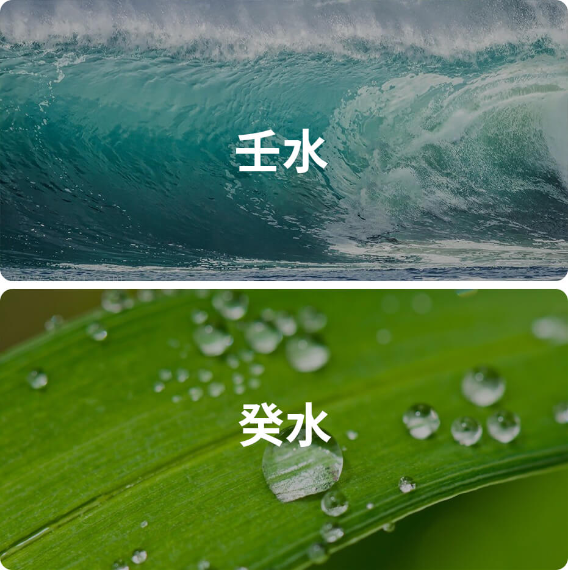

癸水在十天干里排行第十位，属阴水，主智。
自然属性：雨露之水

癸水性格：
内向、喜欢幻想、浪漫
关键词：内向
癸水就如朝露，只在夜幕中酝酿，当太阳升起来时，就羞涩地蒸发掉。所以癸水之人，也如这露水一样，是低调而内敛的。如果仔细留意周围，那些安静坐在角落的害羞少年，也许就是内向的癸水日主！
关键词：喜欢幻想
癸水就如镜子般，映射出外部的环境，把自己幻化成多彩的宝石。所以癸水注定是敏感而多变的。癸水日主的人，容易被环境感染，将周遭的所见所闻幻化成无穷无尽的想象力。许多才子文人和玄学家，都是癸水哦！
关键词：浪漫
朝露的形象，经常会被文人写进诗词画作里，这也从侧面证明了癸水的诗意与浪漫特性。所以你会看到癸水之人，也通常不会太讲求实际，而更在乎“感觉”、“状态”这样的词语，他们通常是人群里最讲求浪漫之人！
癸水日主人的正面性格：聪明机敏，温和善良，重视规则及道德，有洁癖，内向，具有勤奋努力和耐力，思想纯真，温和细腻，冷静，人缘好。
癸水日主人的负面性格：优柔寡断，多愁善感，易幻想，不切实际，易生悲观，感情脆弱，有点神经质，重生活情趣。
诗诀
癸水生人心最公，别人有苦你伤情。
你有好心总是虚，恩人无义未有功。
实心待人亏待已，竹蓝打水一场空。
今后处人要仔细，不由粗心切记清。
（性格气质需要综合命局的五行、十神、用神等特质综合评判，此处仅提供癸水日主维度的特质参考，需知癸水越旺，则癸水特性越明显）
癸水名人：
刘德华、朱茵、霍英东、林青霞、苏东坡、王阳明、韩愈、洛克菲勒、比尔盖茨
癸水类象
海王星、春雨、井、地下室、隐士、潜水员、乞丐、肾脏、生殖系统、骨髓、唾液、梅花、企鹅、笔墨。
《滴天髓》论癸水
癸水至弱，达于天津，得龙而运，功化斯神，不愁火土，不论庚辛，合戊见火，化象斯真。
《渊海子平》论癸水
癸水应非雨露麽，根通亥子即江河。柱无坤坎身还弱，局有财官不尚多。
申子辰全成上格，午寅戌备要中和。假饶火土生深夏，西北行程岂太过。